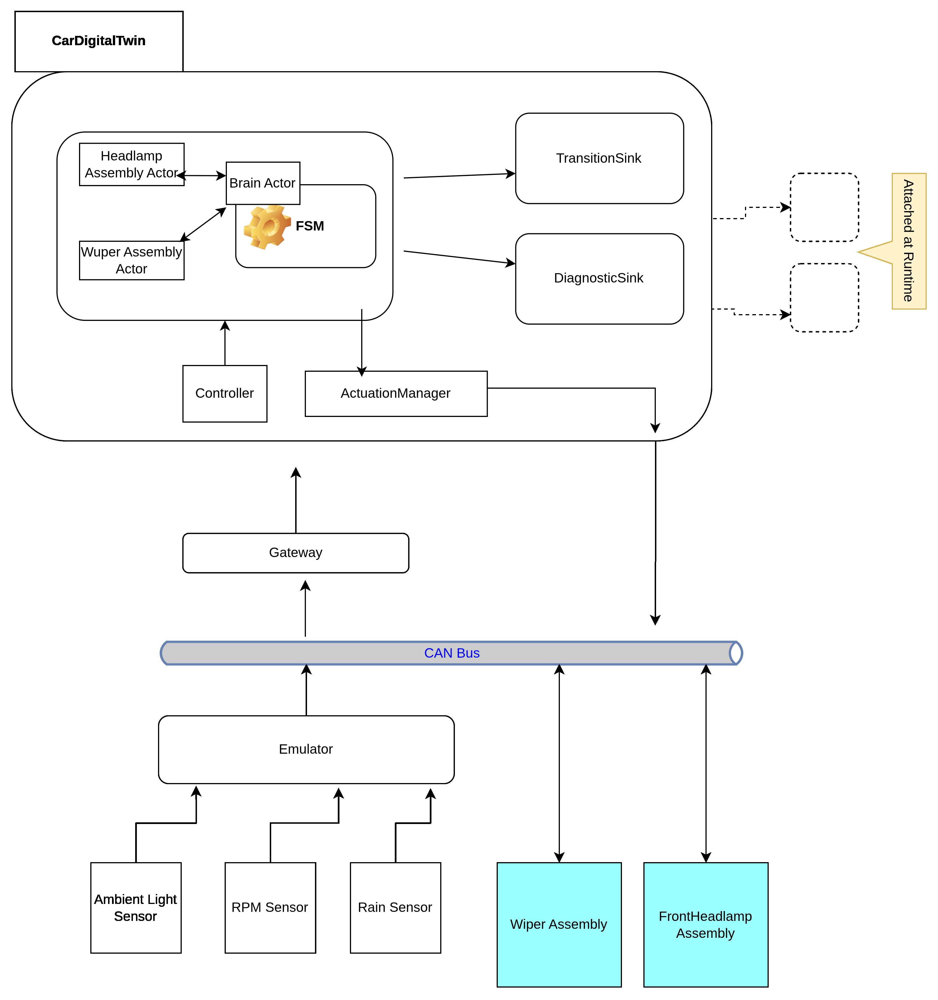

Preface
The preceding stage gave us one actorified assembly — Headlamp as a twinlet under the Brain, quiescence over multiple FSM hops, and a ledger row for every decision. The demo still looked familiar: three processes on vcan0, lux-driven headlamp cycles, ACK/NACK on the wire.
Stage III proved the twinlet pattern. Stage IV asks what happens when a second assembly joins — and when two zones can reply out of order. The answer is not “add another match arm and hope.” It is a reorder buffer, explicit boot/shutdown states in the Brain FSM, and a wiper that runs on rain without an ACK round-trip. Same stdout philosophy: observable transitions, intent on the wire. Four processes now — emulator, gateway, headlamp actuator, wiper actuator — but the real story is inside the Brain’s coordination fabric.
What actually changed (and what did not)
Unchanged: the twin still emits intent, not raw I/O; headlamp still has lux deadband, OnRequested/OffRequested, and hardware ACK; quiescence and detectors still promote unsafe cuts into internal FSM events; the ledger remains the authoritative audit trail.
Changed underneath (from → to) :
- one
pending_turnslot →VecDequereorder buffer (ROB); - ad-hoc ignition handling →
PreparingToStart/PreparingToStopFSM states; - headlamp-specific mailbox variants → generic
ZoneReady/ZoneSpontaneousenvelopes; - Brain
handle()capped at four arms regardless of assembly count; WiperActoras second twinlet with rain ingress and a dedicated actuator process.
Details, wire tables, and file paths live in the Iteration 4 README.
The moment Stage III could not scale
Picture two sensor events arriving back-to-back while the car is already driving:
- Lux drops — Headlamp twinlet must consult.
- Rain starts — Wiper twinlet must consult.
In Stage III, only one turn could be pending. Event 2 waited in a backlog until Headlamp finished — including full tell-back timeouts if the actuator was slow. Worse: when rain finally drained, the ledger’s initial_ctx reflected the world after lux had already committed, not the moment rain arrived. Causal order on the wire, false order in the audit trail.
Adding Wiper did not break the headlamp. It broke the coordination assumption that one assembly’s latency is everyone’s latency.

Design decision 1 — Reorder buffer: tell in parallel, commit in order
Stage IV replaces the single pending slot with a VecDeque of turn barriers. Each ingress event pushes its own barrier; each barrier tracks which assemblies must reply before that turn can commit. Tells fire immediately — Headlamp and Wiper work in parallel. The drain loop inspects only the front barrier: if its pending set is empty, pop and commit; otherwise wait. Replies that arrive early for a later turn are stored; they do not let the ledger skip ahead.
T1 lux ingress → barrier(turn=1, pending={Headlamp}); tell Headlamp
T2 rain ingress → barrier(turn=2, pending={Wiper}); tell Wiper
T3 Wiper replies → turn=2 still blocked behind turn=1
T4 Headlamp replies → commit turn=1, then commit turn=2
Ledger turn=2: initial_ctx matches the instant rain arrived ✅This is the classic issue-in-order / retire-in-order pattern — a reorder buffer between parallel consultants and a single-writer ledger. Per-assembly retry timers live inside each barrier, so a stuck headlamp does not stall wiper tell-backs for unrelated events.
Design decision 2 — Boot and shutdown belong in the FSM
Iteration 3 had no states for “waiting for assemblies to come alive.” PowerOn jumped toward Idle while the actor shoehorned BecomeOn coordination into tell-back plumbing. Stage IV makes the lifecycle explicit:
Off ──PowerOn──► PreparingToStart({Headlamp, Wiper})
│ each AssemblyZoneReady removes one id
▼
Idle ──PowerOff──► PreparingToStop({Headlamp, Wiper}) ──► OffThe assembly countdown is not a separate field on VehicleContext — it is the state:
PreparingToStart({Headlamp, Wiper}) holds the set of assemblies still starting up. Each
AssemblyZoneReady removes one id; when the set is empty, the FSM moves to Idle (while
starting) or Off (while stopping).
transition() does all of this from the state variant alone.
While preparing to start (or stop), external sensor events may still arrive in Brain Actor's
mailbox. They are recorded with applied: false and discarded. They are not replayed from a
backlog. Why? Because after booting (Idle state) , fresh events describe the world now, not a
stale snapshot from milliseconds ago. Similarly, while preparing to stop, all other external
events that arrive, are extraneous: ledger doesn't need to replay them.
Design decision 3 — Four mailbox arms, N assemblies
Stage III named every twinlet in the Brain’s vocabulary: HeadlampZoneReady, HeadlampZoneSpontaneous, and a timeout variant that retried all zones together. Two assemblies would have meant six or more handle() arms — growth with every new zone.
Stage IV collapses to a generic envelope:
enum DigitalTwinCarVocabulary {
Fsm(FsmEvent),
ZoneReady { zone_id, turn_id, reply },
ZoneSpontaneous { zone_id, event },
ZoneTellBackTimeout { zone_id, turn_id, tell_attempt },
GetStatus(...),
}handle() has four arms. Adding a third assembly means a new AssemblyId, a new twinlet actor, and routing in zone_message_for_event — zero new arms in the Brain. That routing function is state-aware as well: while the Brain is booting or shutting down, external sensor events are not forwarded to any twinlet — no tell is sent.
Design decision 4 — Wiper: the simpler twinlet
Headlamp is the hard case — lux threshold, pending actuation states, ACK timer, spontaneous tell-back when the actuator goes silent. Wiper is deliberately lighter.
Rain is projected from CAN (VssSignal::RainDetected); the Brain routes RainsStarted / RainsStopped to WiperActor while in Idle or Driving. The wiper zone has three states (Off / Ready / Running), no OnRequested intermediates, no hardware ACK protocol. A successful tell returns ZoneReady in the same handling cycle; outcomes become StartWiper / StopWiper on CAN via a fourth process — wiper_actuator — that logs motor commands (with an optional drop-probability env var for chaos testing).
Same twinlet contract — tell, tell-back, timeout — but the assembly teaches a second lesson: not every zone needs headlamp’s ceremony. Match the protocol weight to the hardware story.
Running the four-process demo
# vcan0 up; then four terminals:
cargo run -p emulator
cargo run -p front_headlamp_actuator
cargo run -p wiper_actuator
cargo run -p gateway # optional: --print-transitions-onlySet EMULATOR_RAIN_PROB to see rain frames on the bus; watch PreparingToStart shrink as each assembly reports ready, then rain flip the wiper to Running while lux still drives the lamp. Coloured transition rows in ledger-only mode show boot barriers and parallel turns without diagnostic noise.
What comes next
Reconciliation for stuck ActuationIncomplete headlamp states; fuller end-to-end assembly interaction tests with rain and driving; optional CAN-emulated ignition; moving actuation egress into its own child actor so the Brain never blocks on CAN back-pressure. The coordination fabric is in place — the next iteration can focus on resilience and observability at the edges.
Summary
Stage IV is a coordination-correctness milestone: same domain core and ledger discipline, but the Brain can consult multiple assemblies in parallel without lying to the audit trail. The reorder buffer preserves ingress order; preparing states make boot and shutdown part of the FSM’s mode story; generic envelopes cap handle() growth; Wiper proves the twinlet template clones to a simpler assembly and a fourth process on the bus.
From the driver’s perspective: rain starts, wipers run, lamps still respond to tunnels. From the developer’s perspective: the monolith’s assembly seams are now structurally safe to keep opening.
Where the code is
- Repository:
sdv_simulation_4on GitHub — builds onsdv_simulation_3. - Operational reference: project README (crate layout, wire IDs, tests, flags, assembly diagrams).
- Design history:
docs/Wiper-Assembly-Design-Plan.md(implementation playbook retained for reference). - This post is the narrative; the README on
mainis the current truth for running and extending the prototype.
Series: Prototyping a Software Defined Vehicle
← Previous Stage III
All posts in this series: sdv-prototype